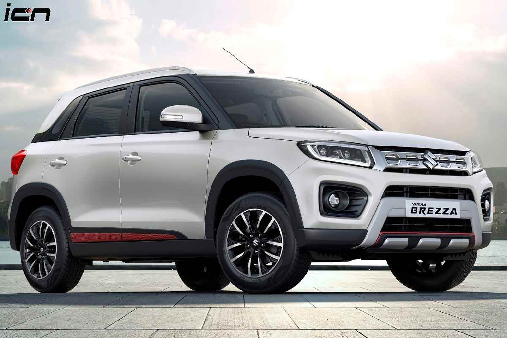

The Maruti Vitara Brezza has 1 Petrol Engine on offer. The Petrol engine is 1462 cc . It is available with Manual & Automatic transmission.Depending upon the variant and fuel type the Vitara Brezza has a mileage of 17.03 to 18.76 kmpl . The Vitara Brezza is a 5 seater 4 cylinder car and has length of 3995mm, width of 1790mm and a wheelbase of 2500mm.
-Some key specifications:
City mileage: 18.76 kmpl
Engine Displacement: 1462
Max Power: 103.26bhp@6000rpm
Seating Capacity: 5
Fuel Type: Petrol
Transmission Type: Manual
Boot Space: 328
Service Cost: (Avg. of 5 years)Rs.6,619
No. of cylinder: 4
Max Torque (nm@rpm): 138nm@4400rpm
Fuel Tank Capacity: 48.0L
Ground Clearance Unladen: 200mm
Turbo Charged: No
Drive Type: FWD
For more details you can visit the official website:
